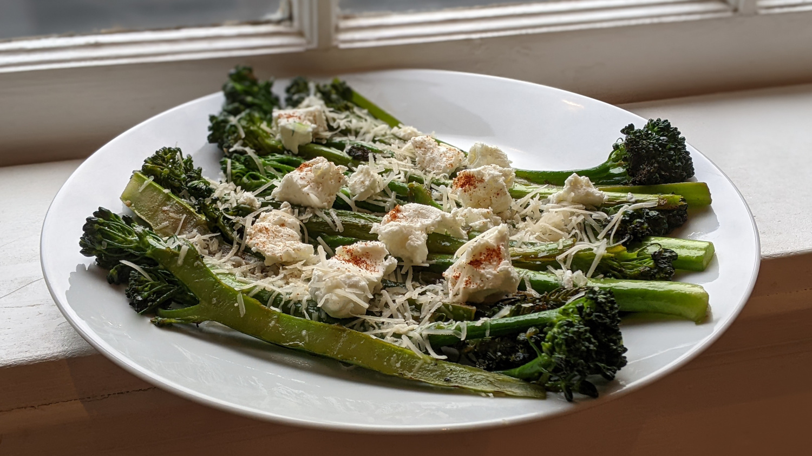

Broccolini

Author: Derek Nichols |
Cooked: May 7, 2022
Yields: 4 Servings | Prep Time: 15 Minutes | Cook Time: 15 Minutes
Ingredients
- 2 bunches broccolini
- 2 Tbs olive oil
- 1 Tbs minced garlic
- 1/4 c. water
- 1 Tbs olive oil
- Salt
- Shredded Parmesan cheese
- Lemon juice
- Goat cheese
- Paprika
Directions
- Wash broccolini, remove any leaves, and halve larger stems lengthwise.
- Heat a cast iron skillet over high heat. Add oil and garlic and cook for about 1 minute stirring frequently.
- Add broccolini to skillet and toss in the oil and garlic. Cook for 2-3 minutes, stirring occasionally.
- Pour in water, reduce heat to medium, cover, and steam for 4 minutes.
- Uncover and increase heat to high. Add an additional Tbs of oil and add salt to taste. Toss the broccolini and cook until they are charred.
- Remove from heat, top with shredded Parmesan cheese, squeeze of lemon juice, clumps of goat cheese, and sprinkle of paprika.
Additional Notes
- 2 bunches seems like a lot to fit in the pan. We had to cook in batches... Or simply only cook one bunch and use slightly less oil.
- When I was younger, a waitress at Cracker Barrel randomly asked if I wanted lemon with my broccoli. I was intrigued and tried it, and let me just say, I've never looked back. Lemon and broccoli is a match made in heaven.